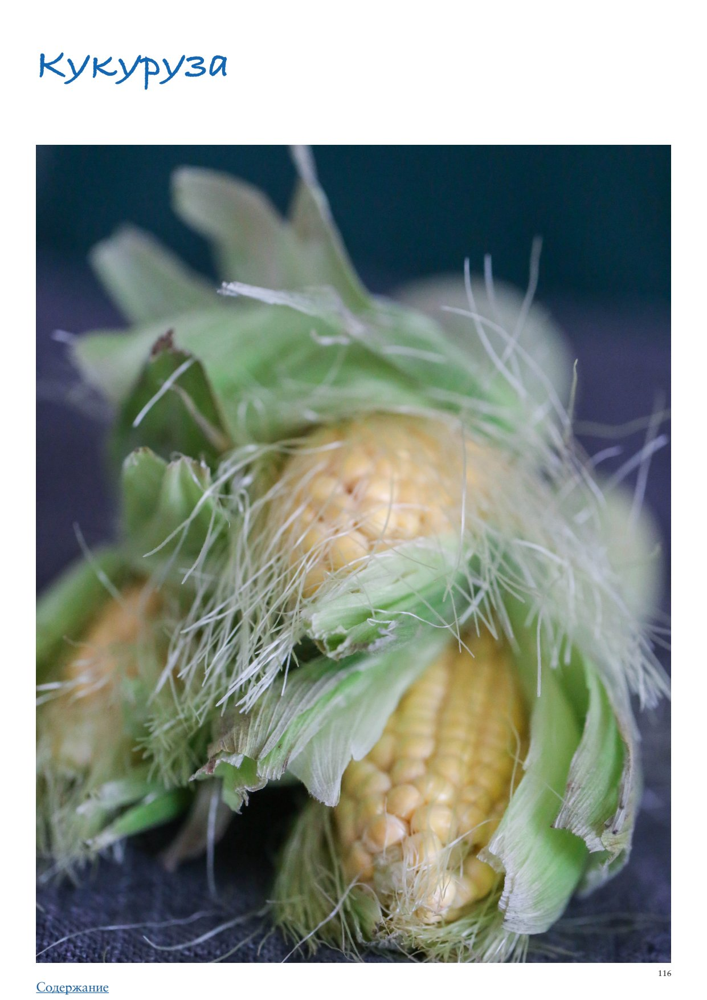

Кукуруза неимоверно популярна на Западе, особенно в обеих Америках, где это бессмертная классика гриля. Но и в России, и в Европе она давно и прочно заняла важное место в кулинарном репертуаре, недаром во времена СССР ее прозвали «царицей полей». Несмотря на то, что, по сути, это злак, когда используется в свежем виде, она классифицируется как овощ, в то время как в сухом и дробленом виде это уже крупа.
Количество блюд и способов кулинарного использования кукурузы впечатляет: салаты и закуски, супы и чаудеры, ризотто и полента, кукурузный хлеб, жаренная на гриле кукуруза… Нельзя забывать и о многочисленных «производных» этого щедрого растения: консервированная кукуруза (частый элемент салатов), кукурузная крупа (полента), кукурузная мука и крахмал, попкорн и даже кукурузное масло. Однако мы с вами в этой статье будем говорить конкретно о свежей кукурузе, так как наша тема — овощи.
Сезон свежей кукурузы начинается в конце июля и длится весь август.
Существует несколько разновидностей кукурузы: воздушная (для попкорна, легко лопается при нагревании сухих зерен), зубовидная (с особо крупными зернами), восковая (обычный кормовой вид), сахарная (та, которую мы чаще всего встречаем в продаже; специально выведенные сорта с высоким содержанием сахара).
В последнее время на фермерских рынках появляется много интересных разновидностей, например, кукуруза с белыми, пестрыми, красными, пурпурными, черными или разноцветными зернами (если вам посчастливится найти в продаже сорт Glass Gem, рекомендую купить, потому что это потрясающе красиво, можно просто положить на кухне и любоваться початками, в которых чередуются зерна желтого, красного, зеленого, розового, фиолетового и даже синего цветов!).
Вне зависимости от сорта кукурузы, выбирайте початки молочной спелости (зерна при сильном нажатии лопаются, выделяя беловатое молочко), крупные, кажущиеся тяжелыми для своего размера. Листья обертки должны быть плотно прилегающими, слегка зеленоватыми, не сухими, чистыми и без повреждений.
Иногда продавцы очищают початки от обертки и волосков внутри «для красоты», но так они резко сокращают срок хранения кукурузы, к тому же початки легко загрязняются, поэтому лучше покупать неочищенные.
Чтобы определить спелость зерен внутри, не стоит раскрывать листья обертки, достаточно прощупать початок: зерна на ощупь должны быть плотными, слегка пружинящими, а главное — не должно чувствоваться пустот под оберткой, особенно в верхней части початка, что говорит о его недозрелости. Слишком жесткие зерна при сухой обертке, напротив, признак переспелости, такая кукуруза будет жесткой и невкусной, даже если долго ее варить.
Кукуруза хорошо хранится в отделении для овощей холодильника завернутой в слегка увлажненный бумажный пакет до 7–8 дней.
Если хотите сохранить кукурузу на более долгий срок, ее можно заморозить. Бланшируйте очищенные початки в слабо кипящей воде в течение 5 минут (это необходимо, чтобы разрушились энзимы, превращающие при охлаждении сахара в крахмал), сразу переложите початки в холодную воду и остудите. Хорошо обсушите на бумажных полотенцах, далее либо сохраните початки целиком, либо срежьте с них зерна. Выложите в пакеты для замораживания с застежкой зиплок и поместите в морозильник для хранения на срок до 6 месяцев и даже дольше.
Свежую кукурузу в початках прежде всего нужно очистить: снять внешние листья обертки и удалить волоски. Затем, в зависимости от рецепта, либо готовить целиком, либо срезать зерна с початка: взять большую глубокую миску, опустить в нее початок и, крепко держа за стебель, срезать зерна со всех сторон движениями небольшого острого ножа сверху вниз.
В некоторых рецептах предлагается собрать кукурузное «молочко», то есть сок, оставшийся в початке после срезания зерен. Он вкусный, сливочный и сладковатый, поэтому жаль, если пропадет. Кукурузное «молочко» добавляется в супы, рагу, ризотто, поленту. Чтобы извлечь его, после того как пересыплете срезанные зерна в другую миску, с нажимом пройдитесь по початку сверху вниз обратной стороной небольшого ножа, выжимая жидкость.
Существует множество способов готовки кукурузы: в целом виде чаще всего ее отваривают, жарят на гриле и запекают. Зерна кукурузы (в том числе консервированной, хотя гораздо вкуснее получается с приготовленной свежей) используются в салатах, супах и сальсе, с ними жарят американские оладьи-фриттеры.
Самый простой способ готовки кукурузы, знакомый всем с детства, это варка. Имейте в виду, что в наши дни в супермаркетах продается не та кормовая кукуруза, которую мы помним с детства, и она не требует 1–1,5 часов на варку, чтобы стать мягкой. Молодая сахарная кукуруза варится совсем недолго, не более 20 минут, а ниже вы найдете рецепт вообще без варки, практически методом су-вид.
В качестве гарнира эффектно смотрятся миниатюрные початки мини-кукурузы — они готовятся очень быстро, и их едят целиком, также их можно мариновать.
5 початков молодой кукурузы 2 небольших цукини 3 зубчика чеснока 1 ст. л. оливкового масла 2 ст. л. рубленого базилика 1 ст. л. рубленого шнитт-лука или зеленого лука 1 ст. л. рубленой петрушки 1,5 ч. л. лимонного сока соль, свежемолотый черный перец
Вместо цукини можно взять фарш из 2 сырых пряных колбасок для гриля и 1 нарезанный маленькими кубиками мясистый сладкий перец, обжарить на оливковом масле. Вместо базилика, зеленого лука и петрушки использовать рубленые шалфей и тимьян (по 1 ст. л.), а в конце дополнительно влить 1–1,5 ст. л. кленового сиропа. Получится совсем другое блюдо, более насыщенное и сытное, но не менее вкусное.
Американское овощное рагу с кукурузой и фасолью, которое можно подать и как гарнир, и как самостоятельное блюдо. Если дополнить его кусочками жареных колбасок или бекона, рагу станет особенно сытным и может служить полноценной трапезой.
на 4 порции
2 початка кукурузы 1 цукини 1 красный сладкий перец 1 маленькая луковица 2 зубчика чеснока 200 г замороженной или консервированной белой фасоли 30 г сливочного масла 1 ст. л. рубленого свежего эстрагона (тархуна) соль, свежемолотый черный перец
Кукуруза отлично сочетается с продуктами со сливочным и молочным вкусом: сливками, сливочным и топленым маслом, мягкими сырами, а также с яйцами, белым мясом (птица, свинина), беконом. Из овощей лучше всего она «дружит» с помидорами, сладким перцем, кабачками, фасолью, в том числе зеленой, зеленым горошком, шампиньонами, перцем чили, практически любой зеленью, цитрусами и яблоками.